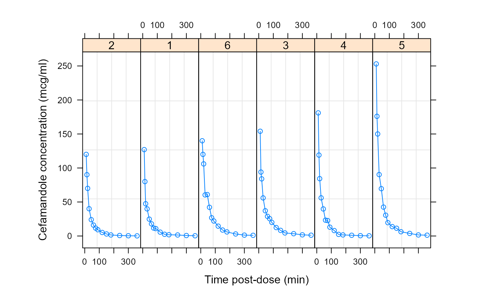

Pharmacokinetics of Cefamandole
Cefamandole.RdThe Cefamandole data frame has 84 rows and 3 columns.
Format
This data frame contains the following columns:
- Subject
a factor giving the subject from which the sample was drawn.
- Time
a numeric vector giving the time at which the sample was drawn (minutes post-injection).
- conc
a numeric vector giving the observed plasma concentration of cefamandole (mcg/ml).
Details
Davidian and Giltinan (1995, 1.1, p. 2) describe data obtained during a pilot study to investigate the pharmacokinetics of the drug cefamandole. Plasma concentrations of the drug were measured on six healthy volunteers at 14 time points following an intraveneous dose of 15 mg/kg body weight of cefamandole.
Source
Pinheiro, J. C. and Bates, D. M. (2000), Mixed-Effects Models in S and S-PLUS, Springer, New York. (Appendix A.4)
Davidian, M. and Giltinan, D. M. (1995), Nonlinear Models for Repeated Measurement Data, Chapman and Hall, London.
Examples
plot(Cefamandole)

fm1 <- nlsList(SSbiexp, data = Cefamandole)
summary(fm1)
#> Call:
#> Model: conc ~ SSbiexp(Time, A1, lrc1, A2, lrc2) | Subject
#> Data: Cefamandole
#>
#> Coefficients:
#> A1
#> Estimate Std. Error t value Pr(>|t|)
#> 2 191.3341 21.38625 8.946595 2.800684e-12
#> 1 497.5333 170.10972 2.924779 2.227379e-03
#> 6 121.7071 22.08024 5.512036 4.938590e-03
#> 3 460.8836 137.08512 3.362025 7.081633e-03
#> 4 485.3220 99.84752 4.860631 1.699110e-06
#> 5 411.5147 51.41633 8.003580 1.513503e-04
#> lrc1
#> Estimate Std. Error t value Pr(>|t|)
#> 2 -2.599155 0.2354814 -11.037623 3.463458e-13
#> 1 -1.674042 0.2283020 -7.332577 1.302103e-06
#> 6 -2.597524 0.3801661 -6.832603 1.237735e-03
#> 3 -1.728710 0.2037836 -8.483070 6.814224e-06
#> 4 -1.852475 0.1850105 -10.012806 1.725950e-09
#> 5 -2.085231 0.1729003 -12.060312 4.629004e-06
#> A2
#> Estimate Std. Error t value Pr(>|t|)
#> 2 34.39548 26.19982 1.312814 1.852725e-04
#> 1 63.07492 14.67306 4.298689 1.336682e-04
#> 6 99.12318 27.69506 3.579093 4.202738e-02
#> 3 88.41797 11.82932 7.474474 2.063732e-05
#> 4 99.60164 18.89437 5.271499 8.044466e-07
#> 5 164.78474 24.35931 6.764755 5.489026e-04
#> lrc2
#> Estimate Std. Error t value Pr(>|t|)
#> 2 -4.160739 0.5475810 -7.598398 1.417916e-11
#> 1 -3.883162 0.2081573 -18.654938 1.629855e-10
#> 6 -4.132324 0.1965967 -21.019295 8.412509e-08
#> 3 -4.070260 0.1316273 -30.922612 2.839152e-11
#> 4 -3.826142 0.1533673 -24.947574 2.049709e-13
#> 5 -3.832660 0.1086349 -35.280208 1.629081e-10
#>
#> Residual standard error: 3.815833 on 60 degrees of freedom
#>